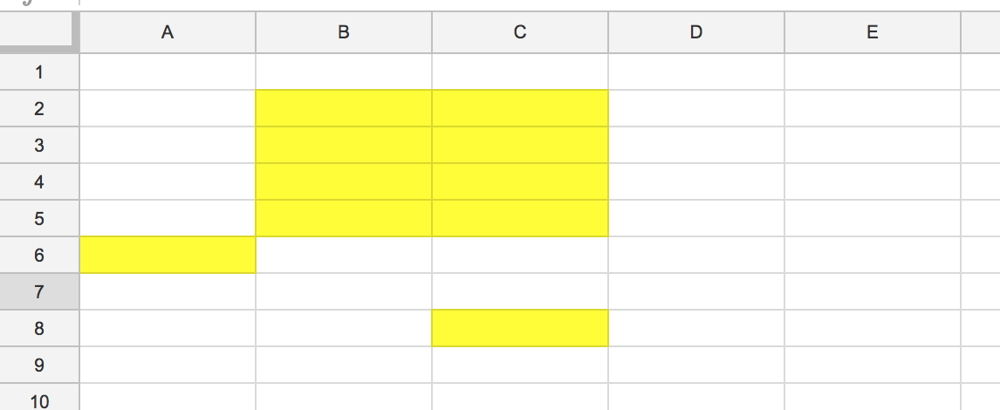
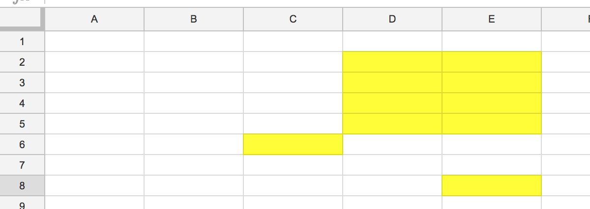

Selection Methods¶
.expand()¶
arguments = LEFT, RIGHT, UP or DOWN expands the current selection in the given cardinal direction.
i.e if you had B2 and B3 represented by variable foo. then
newFoo = foo.expand(RIGHT)
would end with the variable newFoo containing all the cells on rows 2 and 3 except A2 and A3.
.fill()¶
arguments = LEFT, RIGHT, UP or DOWN
the same as .expand() but does not include the currently selected cells.
i.e if you had B2 and B3 represented by variable foo. then
newFoo = foo.expand(RIGHT)
would end with the variable newFoo containing all the cells on rows 2 and 3 except A2, B2, A3 and B3.
.is_not_blank()¶
removes all cells from the selection that do not contain characters or values (note - this does not remove whitespace).
.is_not_whitespace()¶
removed all cells from the selection that only contain whitespace.
NOTE - this is currently separate from is_not_blank() in case of scenarios where you may want to specifically identify cells with rogue whitespace.
.is_bold() or is_not_bold()¶
filter the cells to only/never include cells with a bold property.
.by_index()¶
Select a call by index from a selection. So foo.by_index(2) would select the second cell in the selection of cells contained in the variable of foo.
NOTE - given that is is order dependent it’s recommended that you only use this on selection from a single column of row. i.e “get the second bold value on column B” is fine, “get the second bold value on the tab” may not return what you expect.
.waffle()¶
Used to select cells via cross section of two existing selections.
Example 1: Selecting the contents of cell B2 with a waffle.
Cell = tab.excel_ref(“B1”).waffle(tab.excel_ref(“A2”))
Example 2: Selecting all observation in a table with a waffle
tableColumns = tab.excel_ref(“B2”).expand(RIGHT) tableRows = tab.excel_ref(“A2”).expand(DOWN)
.shift()¶
arguments = LEFT, RIGHT, UP or DOWN
moves your entire selection one space in a cardinal direction.
example:
selection.shift(RIGHT).shift(RIGHT)
Shifting by integer n places:
For complicated movements you use a tuple of two +/- integers. You should get the idea from the example below.
- 3 spaces right .shift(3,0)
- 2 spaces down .shift(0,2)
- 5 spaces left and 2 down .shift(-5, 2)
- 2 spaces right and 1 up .shift(2,-1)
PLEASE NOTE - databaker only reads in-use cells into memory, which it defines by finding the last column and row being used. This means it is possible to go “out of bound” when making a mistake with .shift.
Example: Your spreadsheet only goes as far as column F but you .shift(RIGHT) with a selection that includes a cell in column F. That means your selection now goes “out of bounds” which will cause databaker will throw an error.
There’s no reason to intentionally do this, so just be aware of the possibility when using the .shift method.
.filter()¶
Used to filter based on the values in the cells. The most common implementation is with contains_String.
Example:
foo = tab.filter(contains_string(“Male”))
Would find all of the cells on the tab containing the text “male” and assign them to the variable foo.
There are more filters covered as part of the pyHamCrest library incorporated into databaker: